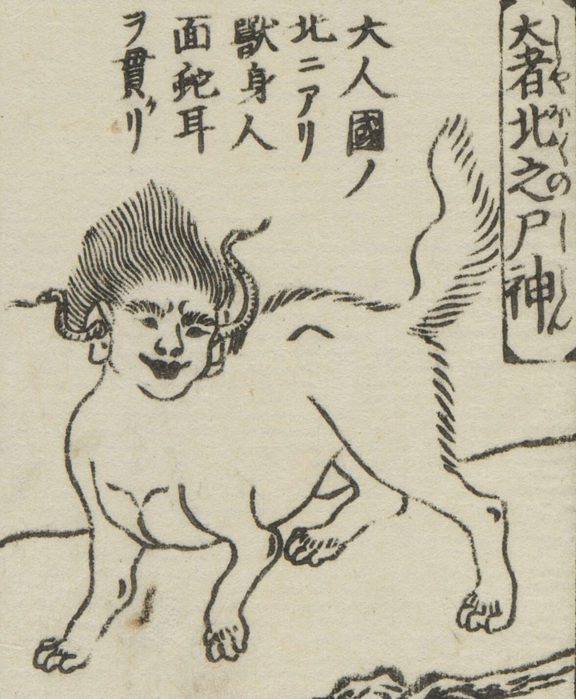

← 图鉴索引

人面獣身の姿をした神。蛇が両耳を貫いている。
著作者：平住専庵・橘有税画／出典：親書誌：U426_nichibunken_0476：唐土訓蒙圖彙；モロコシキンモウズイ／日付：2025／資源識別子：U426_nichibunken_0476_0008_0005
Copyright (c)2010- International Research Center for Japanese Studies, Kyoto, Japan. All rights reserved.